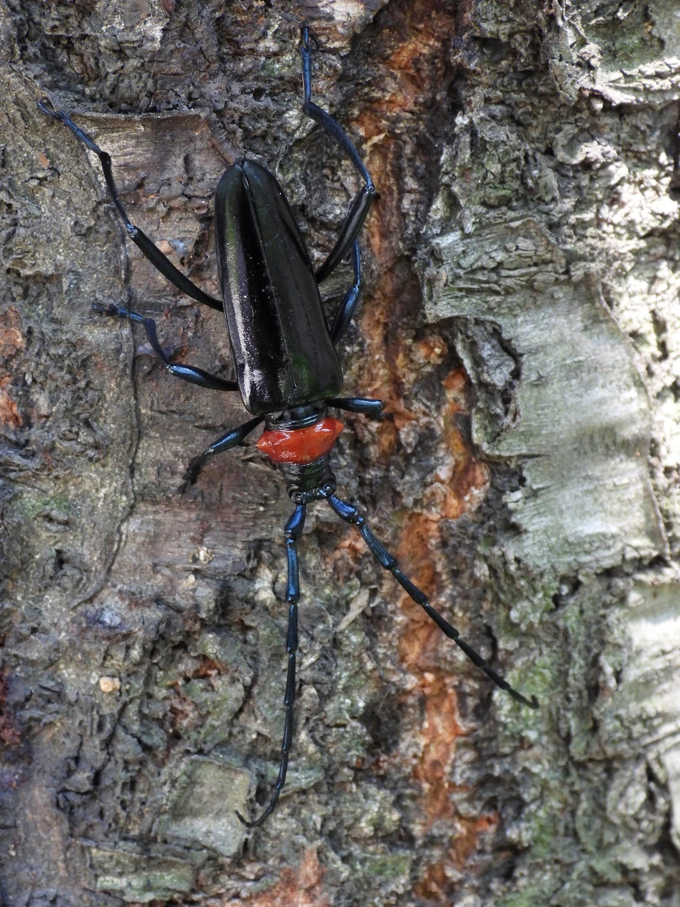

昆虫 · 动物界
桃红颈天牛 Aromia bungii

前胸背板呈鲜红色、体色黑亮的中型天牛，幼虫蛀食桃树等核果类果树，是果园重要的蛀干害虫和检疫对象。
- 分类
- 门节肢动物门纲昆虫纲目鞘翅目科天牛科属红颈天牛属
- 栖息环境
- 桃、李、杏等核果类果园，幼虫在树干基部蛀食
- 地理分布
- 原产中国、日本和朝鲜半岛，已传入欧洲
- 保护级别
- 暂无评估；检疫性蛀干害虫
物种志
桃红颈天牛成虫体长约 2.5–3.5 cm，体黑色有光泽，前胸背板鲜红色，形成鲜明的红黑对比，因此得名；鞘翅表面有细密刻纹，触角长，雄虫触角超过体长，雌虫腹部末端有产卵管。幼虫乳白色，头部褐色，在树干内蛀食。
它主要危害桃、李、杏、樱桃等核果类果树，幼虫在树干基部蛀食木质部，形成蛀道并排出红褐色木屑，导致树势衰弱、流胶甚至整株死亡。桃红颈天牛原产东亚，随苗木和木材贸易传入欧洲，被列为检疫性害虫。防治以严格检疫、清除虫源木、人工捕捉成虫和树干涂白为主，果园中发现蛀孔可用铁丝钩杀或注药处理。
形态与习性
- 食性幼虫蛀食桃、李、杏等树干；成虫啃食树皮
- 体长成虫约 2.5–3.5 cm
- 识别前胸背板鲜红色，体黑色有光泽
- 危害蛀道导致树势衰弱、流胶甚至整株死亡
- 防治严格检疫、清除虫源木、人工捕捉和树干涂白
趣味知识
- 桃红颈天牛的前胸是鲜红色的，和黑色身体形成强烈对比。
- 它主要危害桃树等核果类果树，幼虫在树干基部蛀食。
- 桃红颈天牛已随苗木贸易传入欧洲，被列为检疫性害虫。